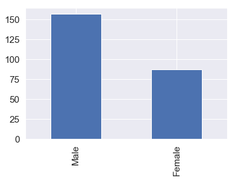
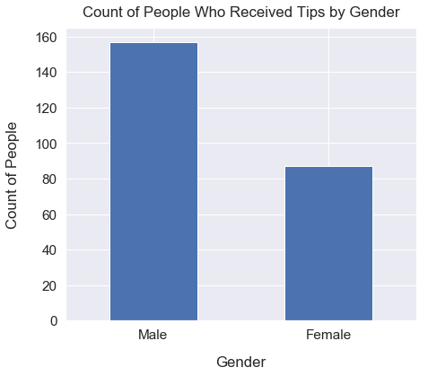
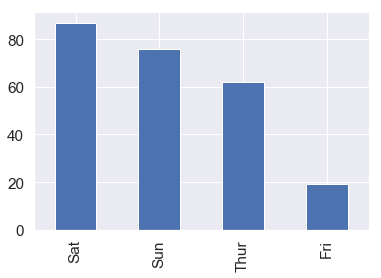
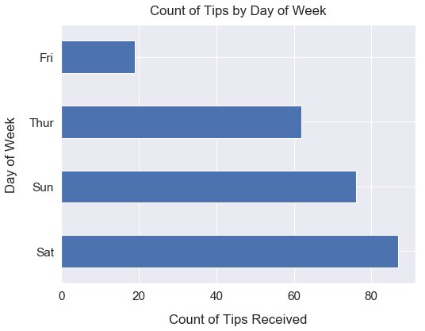

Bar Plot using Pandas
- Sep 13 • 3 min read
- Key Terms: bar plot
Import Modules
import matplotlib.pyplot as plt
import pandas as pd
import seaborn as sns
% matplotlib inline
Bar charts are great at visualizing counts of categorical data. Let's try them out in Pandas Plot.
Read in Tips Dataset from Seaborn Library
This data contains logs of tips received by waiters and waittresses at a restaurant.
df_tips = sns.load_dataset('tips')
Preview the Data
Preview the top 5 rows.
df_tips.head()
| total_bill | tip | sex | smoker | day | time | size | |
|---|---|---|---|---|---|---|---|
| 0 | 16.99 | 1.01 | Female | No | Sun | Dinner | 2 |
| 1 | 10.34 | 1.66 | Male | No | Sun | Dinner | 3 |
| 2 | 21.01 | 3.50 | Male | No | Sun | Dinner | 3 |
| 3 | 23.68 | 3.31 | Male | No | Sun | Dinner | 2 |
| 4 | 24.59 | 3.61 | Female | No | Sun | Dinner | 4 |
With this tips dataset, we have several categorical fields including sex, day, time and size (# of people seated at a table).
Examine Count of Tips Recorded by Gender
First, we can call the value_counts method on the sex (aka gender) field to see the count of unique values for each gender type.
df_tips['sex'].value_counts()
Male 157
Female 87
Name: sex, dtype: int64
The output above is a Pandas Series in which the index items are Male and Female and the values are the count of each index item in our original tips sex field.
Visualize Count of Tips Recorded by Gender
We access the sex field, call the value_counts method to get a count of unique values, then call the plot method and pass in bar (for bar chart) to the kind argument.
Please see the Pandas Series official documentation page for more information.
df_tips['sex'].value_counts().plot(kind='bar');

In our tips dataset, we have more records of tips for male waiters than female waitresses.
Style Plot
Below, I apply several styles to our plot from above so it's easier to interpret.
sns.set(font_scale=1.4)
df_tips['sex'].value_counts().plot(kind='bar', figsize=(7, 6), rot=0)
plt.xlabel("Gender", labelpad=14)
plt.ylabel("Count of People", labelpad=14)
plt.title("Count of People Who Received Tips by Gender", y=1.02);

Visualize Count of Days for Recorded Tips
We access the day field, call the value_counts method to get a count of unique values, then call the plot method and pass in bar (for bar chart) to the kind argument.
df_tips['day'].value_counts().plot(kind='bar');

Most of our tip records were on Saturday followed by Sunday. Only 4 days have recorded tips.
Style Plot
Below, I apply several styles to our plot from above so it's easier to interpret. I turn our vertical bar plot into a horizontal bar plot.
df_tips['day'].value_counts().plot(kind='barh', figsize=(8, 6))
plt.xlabel("Count of Tips Received", labelpad=14)
plt.ylabel("Day of Week", labelpad=14)
plt.title("Count of Tips by Day of Week", y=1.02);
